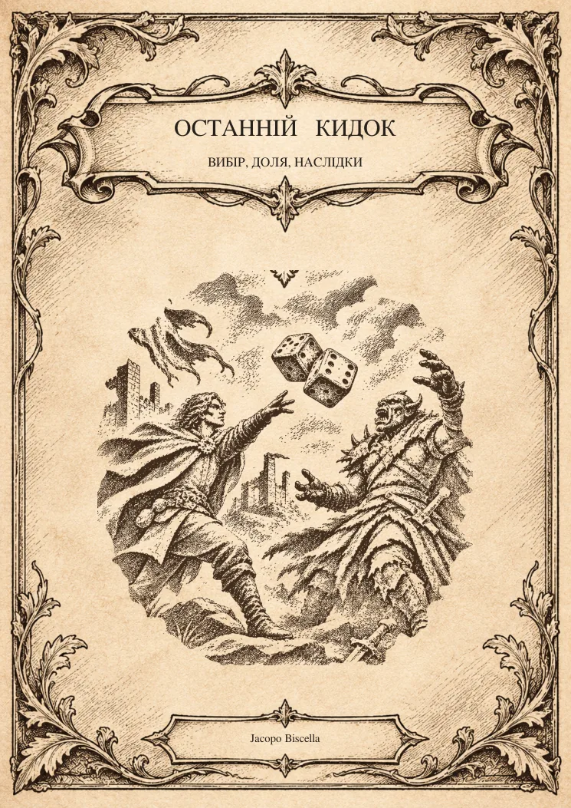

Одна механіка для всіх дій
Бій, приховане пересування, переконання й магія використовують спільний принцип кидка.
Гра Якопо Бішелли
Лаконічна фентезійна рольова гра на шестигранних кубиках, де сміливі дії мають відчутні наслідки. Створіть Протагоніста, робіть вибір і змінюйте історію.

Звичайні кубики · 2d6+
✧Без жорсткої черги ходів або сітки
✧Вибір має наслідки
Звичайні шестигранні кубики, чотири Характеристики й безліч можливостей. Дії вирішують кидками d6, а Вміння й обставини змінюють результат.
Бій — це структурована розмова без жорсткого порядку ходів чи сітки. Магія ризикована, а невдалий критичний кидок потребує нового підходу.
Настільна рольова гра для тих, у кого бракує часу на настільні рольові ігри.
У вас багато справ, але ви все одно хочете розповідати історії з друзями. Візьміть аркуш персонажа, киньте звичайні шестигранні кубики і робіть вибір, який має значення.
Бій, приховане пересування, переконання й магія використовують спільний принцип кидка.
Без жорсткої ініціативи чи сітки: опишіть дію, киньте кубики й прийміть наслідки.
Гримуари мають ціну та відкат: невдале чаклування може зашкодити всій групі.
Відкриття, особисті слабкості й важливі рішення допомагають зростати без накопичення досвіду.
Рани й виснаження використовують спільний запас: магія, крайні зусилля та удари роблять героя вразливим.
Потрібні лише звичайні шестигранні кубики (d6): без спеціальних кубиків чи фіксованого набору. Кидайте потрібну за правилами кількість та порівнюйте результат із цільовим значенням.
| Рівень | Кидок |
|---|---|
| Недосвідчений | 2d6 — залиште найменший |
| Компетентний | 1d6 |
| Експерт | 2d6 — залиште найбільший |
Дві або більше шісток дають критичний успіх. Після провалу критичної спроби потрібна суттєва зміна обставин. Напруження додає один кубик ціною рани від виснаження.
Основні правила завершені та готові до гри. Проєкт активно розвивається; відгуки вітаються.
Читати правила
{{ u.catalog.first }}
{{ u.intro_label }}
{{ u.catalog.intro_short }}
{% assign hp_entry = site.adventures | where: 'lang', page.lang | where: 'content_id', 'the-bell-of-hollow-hearth' | first %}{% if hp_entry.prologue %}{{ u.catalog.prologue_card }} {{ u.catalog.prologue_label }} · {{ hp_entry.prologue.title }}
{% endif %}